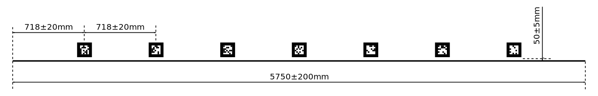

The arena is labelled with fiducial markers. Each marker pattern encodes a number. Each marker number is associated with a particular feature within the arena, and also has an associated size.
| Item | Marker Numbers | Marker Size (mm) |
|---|---|---|
| Arena boundary | 0 - 27 | 200 |
| Token marker | 28 - 100 | 100 |
Two sets of marker codes will be used: one for development purposes, and one for the competition itself. The competition set is only to be used inside the Student Robotics arena at the Student Robotics competition. This is so that people carrying markers past the arena do not confuse robots. The competition codes are 100 above the development codes. When run in competition mode, the software provided by Student Robotics will subtract 100 from the detected marker codes, as well as ignore the development codes. Markers outside of the ranges used in the game will also be ignored.
The markers can be printed on a black-and-white printer. Marker designs can be downloaded from the documentation section of the Student Robotics website.
Twenty eight arena wall markers are positioned around the perimeter of the arena with the marker codes incrementing in a clockwise fashion. The corners are counted in a clockwise fashion, with corner 0 being the corner closest to arena marker 0.

The competition is structured in four phases: the challenges, the virtual league, the main league and the knockout.
@Challenges.
Throughout these challenges a "robot" need not be fully constructed, nor is it limited by the size limits which would apply in the competition arena. Robots may use whatever sensing mechanisms they like, as long as those mechanisms would be permitted in the competition arena.
However robots must be safe (as specified in the regulations) when completing these challenges.
Awarded to the teams that place highest in the knockout at the end of the competition. The teams in 1st, 2nd and 3rd place receive awards.
Awarded to the team, competing in Student Robotics for the first time, which places highest in the league.
Awarded to the team that displays the most extraordinary ingenuity in the design of their robot. It is not awarded for complexity of design, but rather elegance, simplicity, and good engineering.
Awarded to the team judged to have the best online presence. The hashtag for the competition is #srobo2022. Teams are reminded not to post private information about their members or others.
The first team to complete all three challenges will receive an edible prize at the final competition.
The team that presents their robot and themselves in what is judged to be the most outstanding way will receive an edible prize at the final competition.